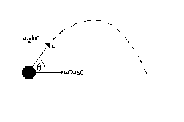
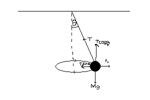

Linear motion, also called rectilinear motion, is one-dimensional motion along a straight line, and can therefore be described mathematically using only one spatial dimension.

Projectile Motion
Projectile motion is a form of motion experienced by an object or particle (a projectile) that is projected in a gravitational field, such as from Earth's surface, and moves along a curved path under the action of gravity only.

Circular Motion
circular motion is a movement of an object along the circumference of a circle or rotation along a circular arc. It can be uniform, with a constant rate of rotation and constant tangential speed, or non-uniform with a changing rate of rotation.